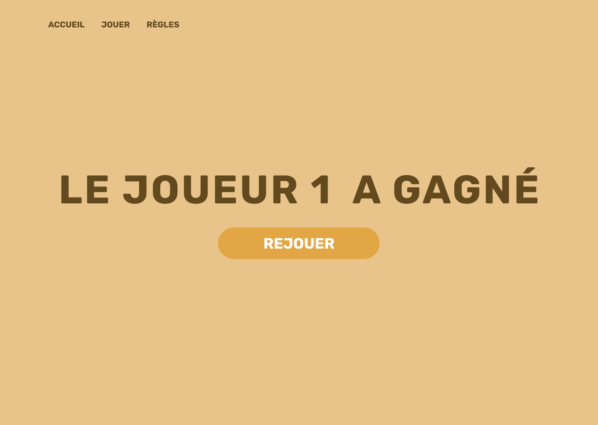
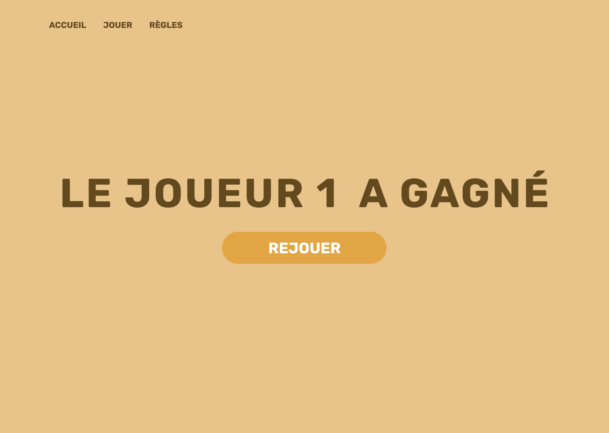

UI UX DESIGN
RÉALISATION
2022
MEMBRE(S) DU PROJET
Thomas Dagorne
LOGICIEL(S) UTILISÉ(S)
Figma, Adobe Photoshop & Visual Studio Code
Ce projet avait pour objectif de faire découvrir le Jeu de Nim et le principe de « stratégie gagnante » aux enfants de 8 à 12 ans. Cette découverte se fait sous forme d’une maquette fonctionnelle se basant sur des User Stories. Celle-ci a été réalisée en HTML et CSS.
Dans un premier temps, sur Photoshop, j’ai fait un wireflow très basique regroupant uniquement le contenu strictement nécessaire. Puis je suis passé à la conception d’une maquette fonctionnelle sur Figma, où j’ai pu créer le design global du site web.
Pour terminer, je me suis contenté de reproduire la maquette créée sur Figma en HTML et CSS (l’utilisation de W3CSS m’était imposée).
Quelques changements ont été réalisé entre la maquette Figma et la maquette HTML/CSS en matière d’ergonomie, de lisibilité et autres. Il faut quand même se rappeler que ce site web est destiné à des enfants.
 
